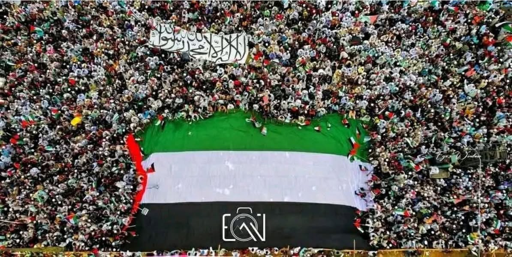

বিভিন্ন হাদিস থেকে প্রমাণিত হয় যে, যুদ্ধে নাবি আলাইসিস সালাম কখনো কালো পতাকা আবার…
১২ এপ্রিল, ২০২৫
বিভিন্ন হাদিস থেকে প্রমাণিত হয় যে, যুদ্ধে নাবি আলাইসিস সালাম কখনো কালো পতাকা আবার কখনো সাদা পতাকা ব্যবহার করেছেন। আবার বিভিন্ন গোত্রের জন্য ছিল (লাল, হলুদ) বিভিন্ন রঙের পতাকা। কিন্তু কোনো পতাকায় কালিমা "লা ইলাহা ইল্লাল্লাহু" লিখা ছিল বলে প্রমাণিত নয়।
এ সংক্রান্ত কোনো বর্ণনা বিশুদ্ধতার মানদণ্ডে উত্তীর্ণ নয়। সুতরাং কালিমা খচিত পতাকাকে ইসলামের শি'আর বা অফিসিয়াল পতাকা বলার সুযোগ নেই। বাকি আপনারা যেটা ভালো মনে করেন।
বিভিন্ন হাদিস থেকে প্রমাণিত হয় যে, যুদ্ধে নাবি আলাইসিস সালাম কখনো কালো পতাকা আবার কখনো সাদা পতাকা ব্যবহার করেছেন। আবার বিভিন্ন গোত্রের জন্য ছিল (লাল, হলুদ) বিভিন্ন রঙের পতাকা। কিন্তু কোনো পতাকায় কালিমা "লা ইলাহা ইল্লাল্লাহু" লিখা ছিল বলে প্রমাণিত নয়।
এ সংক্রান্ত কোনো বর্ণনা বিশুদ্ধতার মানদণ্ডে উত্তীর্ণ নয়। সুতরাং কালিমা খচিত পতাকাকে ইসলামের শি'আর বা অফিসিয়াল পতাকা বলার সুযোগ নেই। বাকি আপনারা যেটা ভালো মনে করেন।
